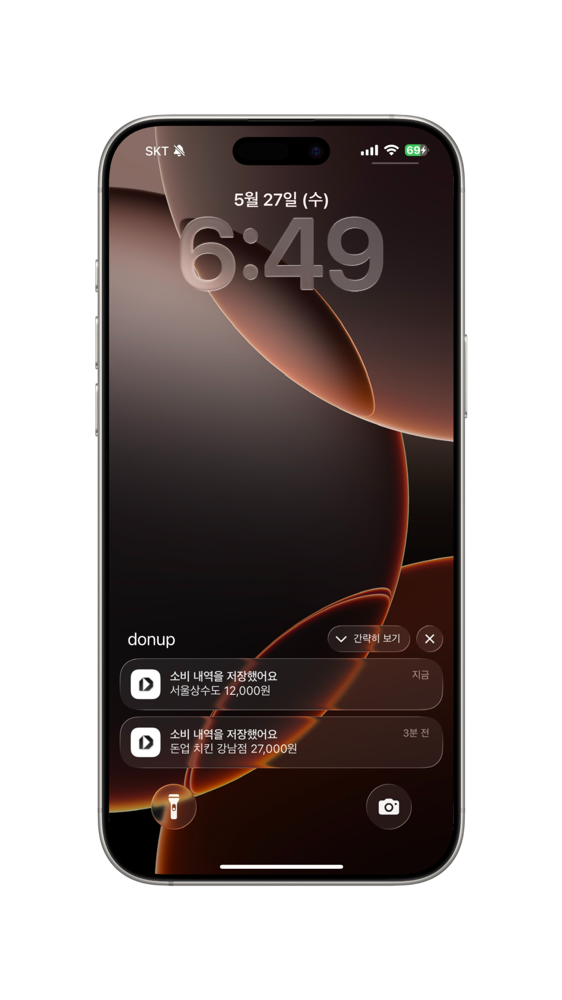
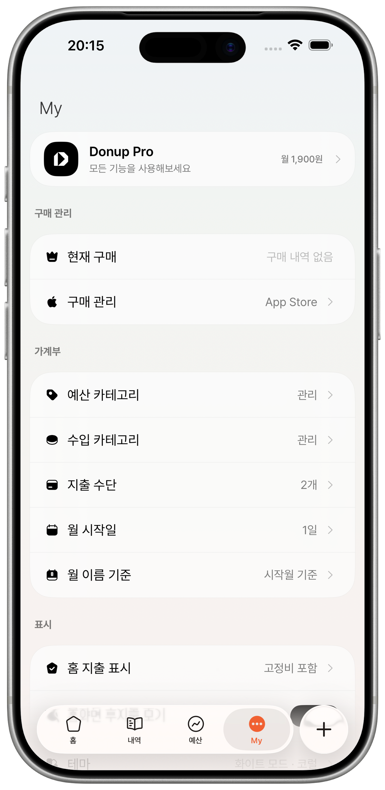

개인 가계부 DonUp
쓴 돈은 많아도,
기록은 짧아야 하니까
DonUp은 결제 문자, 사진, 자연어 입력을 읽고 지출 내역으로 정리해주는 개인 가계부입니다.
기존 가계부는
기록하기 전부터 피곤합니다.
돈을 쓴 순간은 짧은데, 기존 가계부는 저장 버튼을 누르기 전까지 지나야 할 선택지가 너무 많습니다.
지출인지,
수입인지,
이체인지 고르고
지출이면 또
고정지출인지
변동지출인지 고르고
내역명을 입력하고
금액 칸을 눌러
금액을 입력하고
수많은 카테고리 중
하나를 고르고
마지막으로
저장 버튼을 누릅니다.

DonUp은 이렇게 다릅니다
이 긴 과정을
이 긴 과정을
입력 한 줄로
줄입니다.
말하듯 적거나 결제 문자·사진을 넣으면, DonUp이 먼저 내역 초안을 채웁니다.
DonUp은
그냥 적고 확인합니다.
금액, 날짜, 카테고리, 결제수단을 하나씩 고르는 대신 DonUp이 먼저 내역 초안을 채웁니다. 사용자는 맞는지만 보고 저장하면 됩니다.
말하듯 입력
“점심 12,000원”, 결제 문자, 영수증 사진처럼 이미 남아 있는 정보를 그대로 씁니다.
필요한 값만 정리
가맹점, 금액, 날짜, 카테고리, 결제수단 후보를 한 화면에서 확인할 수 있게 모읍니다.
저장 후 바로 요약
추가한 내역은 홈, 월 요약, 예산, 캘린더 흐름에 이어져 오늘 남은 감각을 보여줍니다.
가계부에 필요한 기능을
매일 쓰는 흐름에 맞췄습니다.

자동 기록
결제 문자 자동화
카드 승인 문자가 오면 가맹점과 금액을 읽어 지출 내역으로 저장합니다.

예산 확인
월 요약과 예산 관리
수입, 고정지출, 변동지출을 나눠 보고 오늘 남은 감각을 빠르게 잡습니다.

확장
가져오기, 내보내기, 테마
CSV, 엑셀, PDF, DonUp JSON 백업을 다루고 프리미엄 테마로 오래 씁니다.
데이터가 어디에 머무는지
명확해야 합니다.
DonUp은 회원가입 없이 시작하고, 로컬 저장·CloudKit 동기화·AI 분석 요청의 경계를 기능별로 분리합니다.
무료로 시작하고,
필요할 때 Pro로 넓히세요.
사진·촬영 AI 입력, iCloud 동기화, 데이터 이동이 잦다면 Pro가 더 편합니다.
기능
무료
Pro 월간
Pro 평생
가격
₩0
₩1,900
₩29,900
수입·지출 기록
O
O
O
예산 관리
O
O
O
사진·촬영 AI 입력
1회/일
O
O
결제 문자 자동화
X
O
O
iCloud 동기화
X
O
O
가져오기·내보내기
X
O
O
프리미엄 테마
X
9종
9종